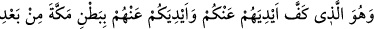
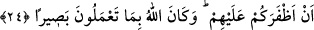

Ahmed bin Ebi’l-Havarî anlatıyor: – Mekke yolunda Ebû Süleyman Dârâni ile
beraberdim. Azık çantamı düşürmüşüm. Ebû Süleyman Dârâni’ye durumu haber verdim.
“Ey kaybolanı geri getiren” diye nidâ etti. Çok geçmeden; “Azık çantası kimden düştü”
diyerek bize doğru gelen bir adam gördüm. Bir de ne göreyim benim azık çantası, hemen
aldım. Ebû Süleymân bana dedi ki: “– Ey Ahmed! Bizi susuz bırakacağını
zannetmiştim.”
Biraz yürüdük. Çok şiddetli soğuk vardı. Bizim üzerimizde deriden yapılmış elbiseler
vardı. Yırtık ve ince elbise içerisinde terlemekte olan bir adama rastladık. Ebû
Süleyman dedi ki: Üzerimizdekilerden bir kaçını sana verelim mi? Adam da: – Sıcaklık
ve soğukluk Allah’ın yaratmış olduğu iki mahluktur. Bu iki mahluk başta tesir etti, sonra
beni bıraktılar. Ben otuz yıldır burada esirim. Hiç titremedim ve hiç yılmadım. Kışın
muhabbetinden bir koku giydirir, yazın da muhabbetinin soğuğundan bir nebze tattırır.
O adam sözüne devamla dedi ki: – Ey Dârânî: Elbiseye dikkat ediyorsun, fakat
takvâyı göz ardı ediyorsun, soğuğu görüyorsun. Ey Dârânî ağlıyorsun, rahatlamak
istiyorsun.
Ebû Süleyman yoluna devam etti ve dedi ki; – Bu adamdan başkası beni tanıyamadı.
Bu hâdiseden maksadın şu husus olduğunu söyleyenler olmuştur: Azığın getirtilmesi
olayıyla Allah Teâlâ, Ebû Süleymân Dârânî’nin yakînini ortaya çıkardıktan sonra, Ebû
Süleyman’ın kendini beğenme gibi bir duruma düşmesini bu adamın hâlini göstererek
engellemiştir. Ebû Süleyman bu adamın hâlini görünce kendi hâli gözünde küçülmüştür.
Bu durum Allah Teâlâ’nın dostlarını koruması hususunda bir prensibidir. Amellerini
değerlendirme noktasında onları korur. Bulundukları halleri, kendilerinin gözünde
küçültür ve onların nefislerinin kötlüklerinden kurtulmalarına yardım eder. Allah
onlardan razı olsun. Onlar vesilesiyle bizlere iyilikler versin. Onların yollarına bizleri
de iletsin. Çünkü yegane cömert ve sonsuz iyilik sahibi ancak O’dur.
24. O sizi onlara karşı muzaffer kıldıktan sonra, Mekke’nin içinde onların ellerini
sizden, sizin ellerinizi de onlardan çekendir. Allah, yaptıklarınızı görendir.
Mekke kâfirlerinin ellerini sizin üzerinize salmayan O’dur. Sayılarının çok olmasına
rağmen, çocuklarına ve ailelerine bir kötülük gelmemesi için onları savaştan kaçmaya
sevkeder. Sizin ellerinizi onların üzerine salmayan yâni onlarla savaşmaktan geri
durmaya sevkeden yine O’dur. O, Mekke’nin içinde onlara karşı sizi galip ve muzaffer
bir konuma getirdikten sonra bunu yapmıştır. Aslında alışılagelmiş âdet, muzaffer olan,
düşmanını hemen bırakıvermez, onun kökünü kazır.
Taberânî ve İbn Ebî Hâtim tefsirlerinde şu olayı naklederler: İkrime bin Ebî Cehil
500 kişiyle Hudeybiye’ye geldi. Rasûlullah (s.a.) da Halid bin Velîd’i bir birliğin